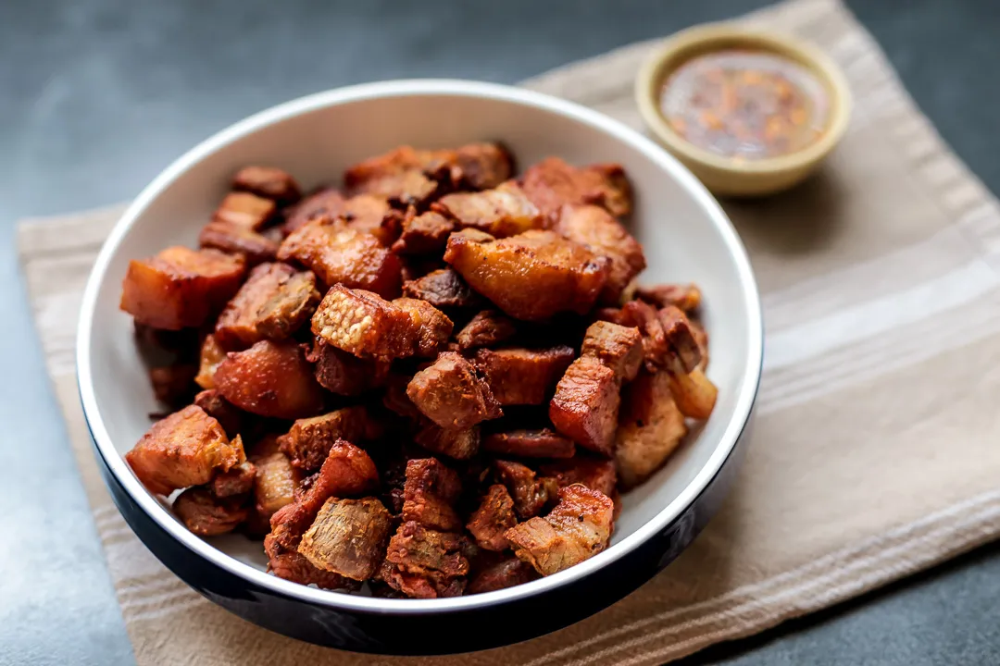

Pinakupsan
Back

Ingredients
- 2 pounds pork belly, cut into 2 inch pieces
- 2 teaspoons salt
Instructions
- 1. In a bowl, season pork with the salt..
- 2. Over high heat, preheat a wide, thick-bottomed pan. Place pork in the pan in a single layer.
- 3. Cook, turning occasionally, for about 7 to 10 minutes or until pork begins to render fat.
- 4. When the pork has released oil, decrease heat to low. Cover and continue to cook, turning occasionally, until pork pieces are golden brown and reduced in size.
- 5. With a slotted spoon, remove from pan and drain on a wire rack set over a baking sheet. Serve with spicy vinegar dip or store for future us..